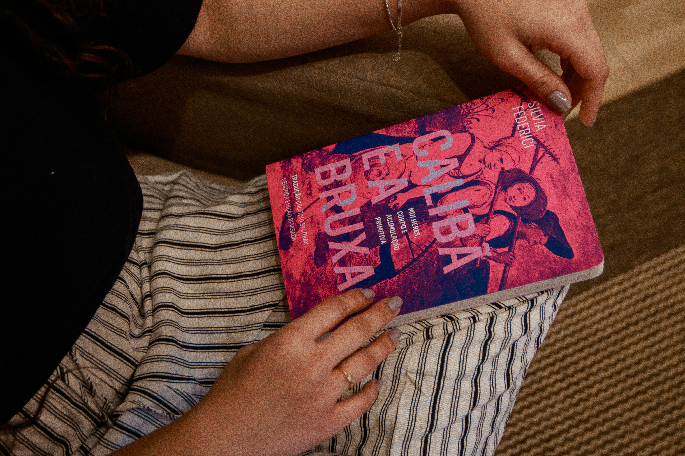

psicóloga especializada em sexualidade e perinatalidade, com destaque para saúde da mulher e população lgbtqiapn+. um espaço para ser você por inteira.
"às vezes, o que te assusta pode ser justamente aquilo que você precisa."

"a vida acontece no caminho,
aproveite sua jornada"
sou psicóloga e trabalho a partir da análise do comportamento e da ACT - terapia de aceitação e compromisso. isso significa que, juntas, vamos entender de forma mais completa como seus pensamentos, emoções e experiências influenciam na forma como você se vê - e como construir novas formas de responder ao que você vive.
no processo terapêutico, te acompanho e te escuto de forma ética e sem julgamentos, com presença e respeito a sua história, suas dores e suas vulnerabilidades. meu objetivo é criar um ambiente em que você se sinta segura para ser você mesma e florescer.
aqui, cultivamos um espaço seguro para você sentir, sem culpa!
Se você ainda se questiona sobre a terapia, aqui vão alguns motivos que levam as pessoas a marcarem um horário:
acompanhamento psicológico voltado para as vivências de ser mulher considerando, além do individual, os atravessamentos sociais, históricos e culturais.
olhar cuidadoso para compreensão das formas como você se vinculo, se envolve e se posiciona em suas relações.
um espaço seguro e sem julgamentos para falar sobre desejo, prazer e identidade com naturalidade e leveza.
Simples, prático e no seu ritmo. Cada etapa..
vamos começar?me manda um olá no WhatsApp. Pode ir tranquila que vamos ter um primeiro contato onde vou entender um pouquinho do que você tem buscado e te passar algumas informações importantes do processo terapêutico.
nos encontramos em vídeo ou na clínica para que eu possa te conhecer e entender melhor como posso te ajudar. E você pode ver mais de pertinho como funciona uma sessão comigo, sem compromisso mas com muito acolhimento
sessão a sessão, vamos caminhando pelas suas vivências, entendendo como lidar com seus sentimentos, suas relações e principalmente, aprendendo mais sobre você mesma e todas as suas versões
" A Bê me ajudou a entender que eu não precisava estar à beira de um colapso para merecer cuidado. Hoje olho para a maternidade de um jeito completamente diferente, mais gentil. Sou outra mulher.
A. M.
Acompanhada na gravidez
"Nunca tinha conseguido falar sobre sexualidade sem sentir vergonha até começar as sessões. Com a Beatriz encontrei segurança."
C. F.
Paciente atual
"Lugar perfeito onde me senti ouvida de verdade. Recomendo para toda e qualquer mulher."
R. P.
"A terapia com a Beatriz tem sido um divisor de águas. Me sinto muito mais confiante e em paz com minhas decisões. É um ambiente onde realmente me sinto ouvida sem julgamentos."
L. T.
Paciente online
"Comecei as sessões para entender melhor meus relacionamentos e encontrei um espaço de muito acolhimento. A Bê me ajudou a impor limites de forma saudável."
M. S.
Paciente atual
se não encontrou a resposta aqui, é só me chamar no whatsapp. ficarei muito feliz em te explicar como funciona tudo com calma!
tudo bem não saber, isso é mais comum do que você imagina. vamos começar do jeito que for possível, falamos sobre sua vida atualmente, o que é parte de quem você é hoje em dia, as coisas que você gosta de fazer e, aos poucos vamos construindo caminhos possíveis e dialogos que sejam importantes para seu processo terapeutico.
as sessões acontecem semanalmente, atendo tanto presencialmente quanto online, e tem duração de 50 minutos. para informações sobre valores, horários disponíveis e os agendamentos, me manda uma mensagem que te passo tudo certinho!
talvez isso aconteça... e tá tudo bem! a terapia é um processo de encontros, vínculos e progressos, mas nem sempre isso acontece de primeira e se sentirmos que esse é o caso, vamos conversar sobre o assunto e decidir o melhor caminho, seja trabalhando no nosso processo de outras formas, ou até mesmo buscando outros profissionais que se encaixem melhor no que faça sentido para sua história.
não, o meu trabalho é voltado para mulheres e suas vivências, mas não se limita a isso. também pessoas da população lgbtqiapn+ e outras pessoas que se identifiquem com a forma como conduzo a clínica: um espaço de escuta, sem julgamentos e atento aos atravessamentos sociais, culturais e históricos. e se você sente que faz sentido pra você, esse espaço também pode ser seu.
Compartilho por lá reflexões, informações sobre psicologia e aquele conteúdo que te faz pensar "é exatamente isso que eu sinto". Vem me acompanhar!
dá uma olhadinha em mais postspsi.beribeiro
Psicóloga · CRP 08/31053
234 curtidas
psi.beribeiro A terapia não é sobre te consertar, é sobre te conhecer. 🌿 Às vezes o maior presente que você pode se dar é o espaço para simplesmente ser. ver mais
há 2 dias
+1.400 pessoas
me acompanham por lá
dê o primeiro passo para cultivar sua melhor versão. clica aqui e me manda um olá no whatsapp, estou te esperando.